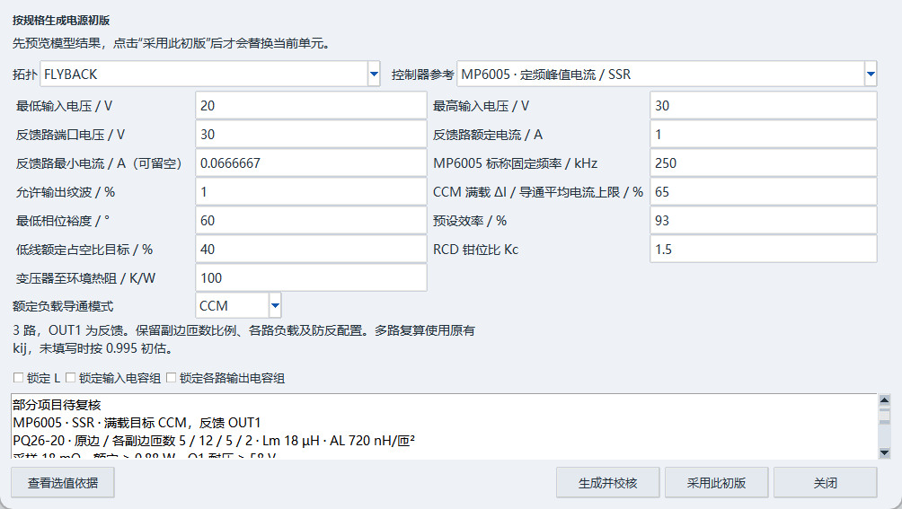

05 由规格生成电源初版
自动设计按所选控制器参考、需求和锁定项生成一套初步元件值，并在已覆盖工况复算这套设计。采用前先看结果和待复核项。
开关电源单元 → 自动设计 → 按规格生成初版（Buck / Boost / 反激）…
操作步骤
- 选拓扑与控制器参考 Buck 可选 TPS40200 电压模式或 LTC3864 峰值电流模式。Boost 使用 LM5022 峰值电流模式。定频反激使用 MP6005 峰值电流 SSR，按情况选择满载 CCM 或 DCM。
- 填入规格和约束 提供电压、额定电流、纹波限制和最低相位裕度。定频反激显示 MP6005 的 250 kHz 标称参考频率。已配置多路反激时，自动设计表中的电压和电流指反馈路，其他路沿用现有绕组及负载。
- 保留已确定的元件 打开与当前单元相同的拓扑时，可勾选表中提供的锁定项。例如已采购电感时锁定 L，已确定电容组时锁定对应电容组。勾选前确认当前设计的数值和单位。
- 生成并检查 点“生成并校核”，阅读候选元件值、工作点、纹波、稳定裕度及超限项。可从“查看选值依据”了解限值和取值来源。改了规格后需重新生成。
- 采用并复核 确认后点“采用此初版”。回到计算器核对器件身份、额定值和温升等实际条件，并逐端点检查。需要保留旧方案时，先独立保存原配置。

从上到下填写规格、决定保留哪些已选件，再点“生成并校核”。结果区出现问题时先读对应工况。
输入字段
| 字段或选项 | 单位或取值 | 输入的含义及用途 |
|---|---|---|
| 最低 / 最高输入电压，输出端口电压 | V | 用于选值与角点复算。多路反激的输出电压指主反馈路的防反后端口。 |
| 额定 / 最小负载电流 | A | 定义满载与轻载。最小电流栏允许留空。多路反激输入的是反馈路电流。 |
| 开关频率，允许输出纹波 | kHz、% | 分别决定每周期充放电时间和允许的输出峰峰纹波。 |
| 满载电感纹波目标 | % | Buck 以额定输出电流为基准，Boost 以低线满载输入电流为基准。反激 CCM 用原边导通平均电流，选择 DCM 时隐藏此项。 |
| 最低相位裕度 | ° | 初版补偿筛选和角点检查采用的裕度门槛。 |
| 预设效率 | % | 在显示此项的 Boost、反激方案中，作为输入电流和功率的初估条件。 |
| 低线占空比目标，钳位比 Kc，变压器至环境热阻 | %、无量纲、K/W | 反激的变比、RCD 选值及温升初估输入。Kc 定义为钳位电压相对反射电压的比值。 |
| 锁定 L、DCR 或各电容组 | 选择 | 复算沿用所选已有元件值。出现不满足时，先定位锁定项是否限制了候选方案。 |
结果核对
自动生成入口当前覆盖 Buck、Boost 和定频 SSR 反激。其他拓扑可从现有示例或手动配置继续设计。
工程采用前确认参数来源和拟用器件。自动计算依据包含原厂资料、项目余量和可复算示例。